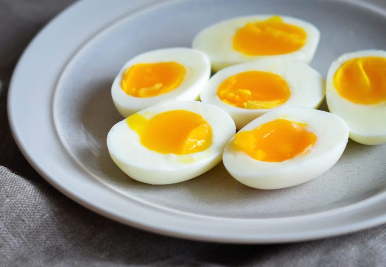

Soft Boiled Eggs

Description
Whenever I go to a ramen restaurant, I always get the half-boiled
egg. Now, I have absolutely no idea how to do a half boiled egg
but I have discovered how to consistently make soft boiled eggs
with a runny yolk.
Ingredients
- Eggs, how many ever you want
- Ice
Steps
- Pour water into a pot, enough to cover the eggs if they were
in the pot. (DO NOT put the eggs in yet)
- Bring the water to a boil
- Gently lower the eggs into the pot and boil uncovered for 4
minutes
- Cover with the lid and turn off the heat.
- Leave for 2 minutes; prepare a cold water bath while waiting
- Take the eggs out of the water and transfer into the cold water
bath.
Notes
-
Results may vary depending on the eggs used. Especially if they
have just come out of the fridge or if they were at room
temperature. The eggs I use generally come straight out of the
fridge.